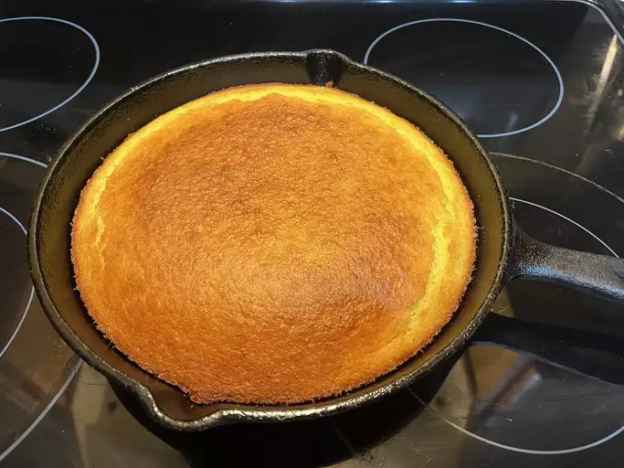

Nee Nee's Bacon Cornbread

A Little History
I was never really a big corn bread growing up. But at somepoint, my mom (Nee Nee) began adding bacon to her corn bread. An let me tell you- it was awesome. So one winter a few years ago i texted and asked how she made it and she let me know. LIke a lot of her recipes, it starts with some basic ingredients (cornbreaad mix in this case), and she adds her own twists. Lets get started.
Ingredients
- 1 package of yellow cornbread mix (not sweet)
- 1 egg
- 1 Cup of Milk
- 5 Strips of Bacon
- 1 stick of Butter
- Half a cup of Sour Cream
Instructions
- Preheat Cast Iron Skilet with Bacon Covering the bottom, 355 for 15 min
- Mix Cornbread Mix, Egg, Milk, Melted Butter, and soucream into a large bowl
- Pour grease from bacon into bowl, mix
- Pour batter into skillet and bake 375 fore 45 minutes
Home